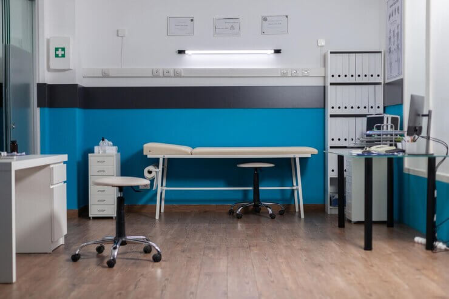
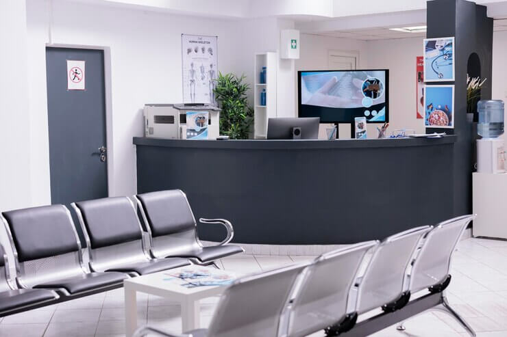
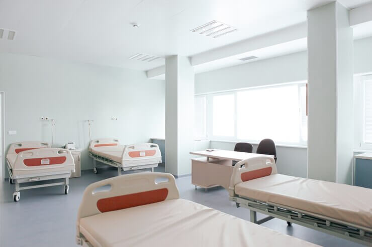
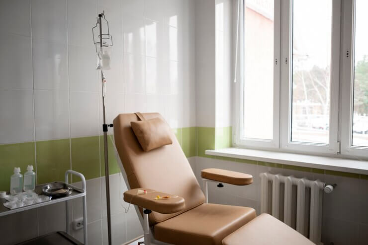
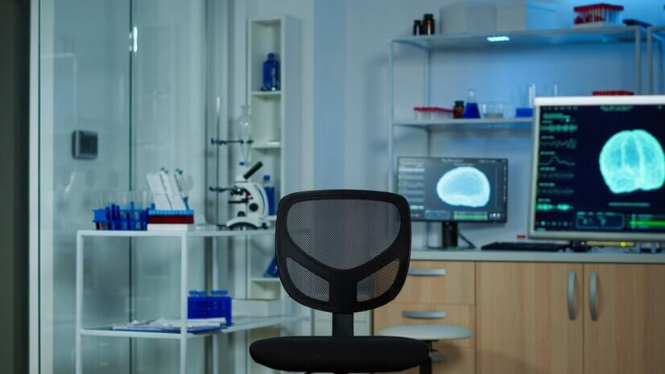
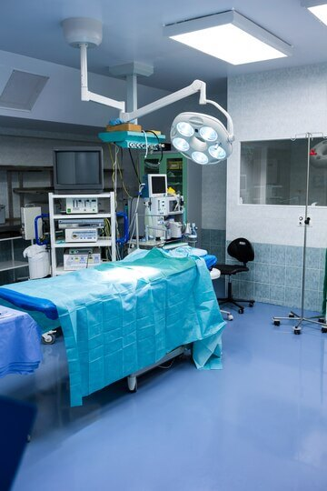

Durante gran parte del siglo XIX y hasta la década de los años 80, la
ciudad de San Miguel de Tucumán sólo poseía dos establecimientos
hospitalarios, los cuales resultaban insuficientes ante la creciente
demanda y las precarias condiciones higiénicas e insalubres. Por estas
razones, en 1880, el intendente de la capital Ángel Cruz Padilla planteó
la construcción de una nueva clínica mixta de mujeres y hombres. La
construcción de la Clínica fue encomendada al arquitecto Federico
Stavelius y los ingenieros Carlos Lowenhard y Adolfo Methfessel. Así el 9
de octubre de 1880 comenzaron las obras del establecimiento sanitario, las
cuales fueron concretadas el 28 de noviembre de 1882 e inauguradas el 1 de
enero de 1883. Este nuevo nosocomio fue denominado Clínica Mixta Nuestra
Señora de las Mercedes. La Clínica Mixta poseía distintos pabellones de
internación, sanitarios y una sala de operaciones. Posteriormente fueron
construidos y agregados al diseño original nuevos baños, pabellones de
internados, salas de cirugía, salas de desinfección y departamento de
maternidad. En 1913 la denominación de la clínica fue reemplazada,
denominándose desde entonces como Rolling Clínica. Trabajamos brindando
cuidados asistenciales de excelencia al alcance de toda la población,
situando al paciente y a su familia en el eje de nuestra atención.
Enfocados en el desarrollo profesional continuo, la investigación en todas
sus expresiones y las acciones que promuevan la salud de la comunidad, y
contribuyan a mejorar la realidad social en la que estamos inmersos.
Nuestra visión institucional es consolidarnos como una organización
hospitalaria modelo y referente a nivel regional desde la perspectiva
asistencial, de recursos humanos, docencia e investigación.
Instalaciones y Tecnología
Como institución asistencial referente estamos abocados a ofrecer al mundo
una medicina de excelencia. Por eso, contamos con espacios renovados y
equipados con aparatología de avanzada, amplias habitaciones con la mayor
comodidad y quirófanos y unidades de última generación. A lo largo de los
años, nuestra clínica ha evolucionado tanto en la infraestructura como en
los recursos que la integran. Innovación, funcionalidad, bienestar y
seguridad son los ejes que sustentan cada ampliación y mejora. Así,
inauguramos nuevos centros y espacios de cuidados críticos e internación.
Las distintas áreas que componen nuestra clinica están atravesadas por una
plataforma informática integradora. Este desarrollo, propio de nuestro
departamento informático, incluye la Historia Clínica Electrónica, la cual
es única por cada paciente y cubre todas las necesidades de registro
médico. Así, cada persona que es atendida en nuestra institución posee un
registro cronológico que abarca todas las áreas de atención: ambulatoria,
quirófanos, internación y especialidades médicas. La conducción de la
Clínica Rolling está a cargo del Honorable Directorio y de un Director de
quien dependen las áreas Médica, Administrativa y Comercial. Actualmente,
rige un sistema de organización médica departamental. De cada uno de ellos
dependen Servicios y Secciones que corresponden a las diversas
especialidades.






Equipo Médico
Dr. Juan Perez - Jefe de Servicio de Cardiología
Médico. Especialista en Medicina Interna. Especialista en
Cardiología. Médico. Universidad Católica de Córdoba. Facultad de
Medicina. Córdoba, Argentina. Diciembre, 2002 Residente de
Medicina Interna- Hospital Privado Centro Médico de Córdoba,
Argentina. 2003- 2007 Residente de Medicina Interna- Hospital of
Saint Raphael, Yale University School of Medicine, New Haven CT,
EEUU.
Dra. Patricia Vargas - Jefa de Servicio
Medica cirujana. Especialista en Medicina Interna. Especialista en
Endocrinología. Becaria “Programa de Intercambio para jóvenes
endocrinólogos españoles y argentinos”. FASEN-SEEN. “Cáncer de
Tiroides, Tumores Neuroendócrinos y Diabetes”. Hospital
Universitario Vall dHebron, Barcelona. 2018. España.
Dr. Marcos Sanchez - Jefe de Servicio
Servicio de Gastroenterología de la Clínica de la Familia.
Sanatorio Alive. Consultorio externo del Centro Mutual. Servicio
de Gastroenterología del Sanatorio Parque. Servicio de
Gastroenterología del Sanatorio Francés.
Dra. Ana Sanchez - Jefa de Servicio
Médica cirujana. Especialista en Ginecología y Obstetricia.
Especialista en Medicina Maternofetal. The American College of
Obstetricians and Gynecologists. Cetificado de reconocimiento por
haber participado en el Programa de objetivos Educacionales para
Médicos Residentes.
Dr. Jorge Ramirez - Jefe de Servicio
Doctor en Medicina. Especialista en Neurología. Servicio de
Neurofisiología, área Neurofisiología Intraoperatoria, en el
Hospital Universitario de Bellvitge, Barcelona. Catalunya. España.
Dra. Laura Fernandez - Jefa de Servicio
Medica Cirujana. Especialista en oftalmologia. Miembro de la
Consejo Argentino de Oftalmologia y de la Academia Americana.
Dr. Andres Martinez - Jefe de Servicio
Médico. Especialista en Ortopedia y Traumatología. Cirujano
acreditado en Pierna, Tobillo y Pie. Cirujano de Trauma
Ortopédico. Miembro Titular de la Asociación Argentina de
Ortopedia y Traumatología (AAOT). Miembro Acreditado de la
Sociedad Argentina de Medicina y Cirugía de la Pierna y el Pie
(SAMeCiPP)
Dr. Carlos Rodriguez - Jefe de Servicio
Médico, Especialista en Pediatría y Neonatología. Docente
Universitario en Ciencias de la Salud. Doctorando en Ciencias
Biomédicas IUCBC. Rotación Servicio de Pediatria. Hôpital Timone
Enfants. Marsella. Francia.
Dra. Julia Torres - Jefa de Servicio
Médica, especialista en Psiquiatría. Residente del Servicio de
Psiquiatría. Hospital Dr. Marcial Quiroga de la Provincia de San
Juan. Residente del Servicio de Psiquiatría y Psicología. Hospital
Privado Universitario de Córdoba.
Reconocimientos
Premios institucionales para la Clínica
Premio Best Spanish Clinnics Awards®, organizado por la consultora
Higia Benchmarking, reconocen nuestra excelencia a través de
indicadores de eficiencia, adecuación y calidad asistencial.
Tres galardones en la XXIV edición de los premios TOP 20 de IQVIA
Spain: clínica de referencia regional y nacional, Área del Corazón y
Área de Pediatría.
Premio EMAS de la Generalitat de Cataluña por la gestión ambiental.
Los Servicios de Oftalmología y Reumatología fueron premiados por la
Sociedad Argentina de Pediatría por la comunicación “La tomografía de
coherencia óptica como herramienta de criba de uveitis anterior en
pacientes pediátricos con diagnóstico de artritis idiopática juvenil”.
El Servicio de Cirugía Pediátrica fue galardonado como mejor servicio
en su ámbito por el Monitor de Reputación Sanitaria.
Preguntas Frecuentes
¿Cuáles son los servicios médicos que ofrece la clínica?
Nuestra clínica ofrece una amplia gama de servicios médicos, que
incluyen consultas generales, chequeos médicos, análisis de laboratorio,
atención de enfermedades crónicas, vacunación, entre otros.
¿Cómo puedo solicitar un turno?
Puedes solicitar una cita médica llamando a nuestro número telefónico de
atención al paciente o utilizando nuestro sistema de turnos en línea.
¿Aceptan mi obtra social?
Aceptamos la mayoría de los seguros médicos. Si tienes alguna pregunta
específica sobre tu seguro, no dudes en contactarnos.
¿Qué debo hacer en caso de una emergencia médica fuera del horario de
atención?
En caso de una emergencia médica fuera de nuestro horario regular, te
recomendamos que llames al servicio de emergencias local o vayas al
hospital más cercano. Para asuntos no urgentes, puedes dejar tu consulta
on-line y te contactaremos tan pronto como sea posible.
¿Cómo puedo obtener mis resultados de laboratorio?
Los resultados de laboratorio estarán disponibles a través de nuestro
sistema en línea. Te proporcionaremos instrucciones y un código de
acceso para acceder a tus resultados de manera segura. También puedes
llamar a nuestra clínica para obtener información sobre tus resultados.
¿Cuál es la política de cancelación de citas?
Entendemos que las circunstancias pueden cambiar. Te pedimos que nos
avises con al menos 24 horas de antelación si necesitas cancelar o
reprogramar tu cita. Esto nos permite optimizar nuestros horarios y
brindar un mejor servicio a todos nuestros pacientes.
Información de contacto para consultas adicionales
TELÉFONOS Central de Turnos (0381) 468-8888 Información general (0381)
468-8200 DIRECCIÓN Gral. Paz 576, T4000 San Miguel de Tucumán, Tucumán